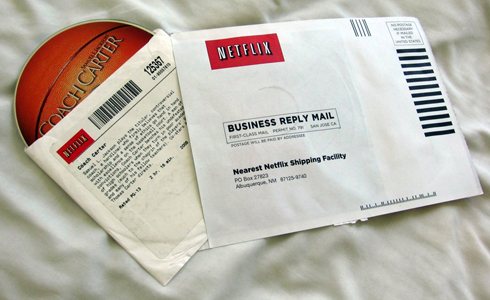
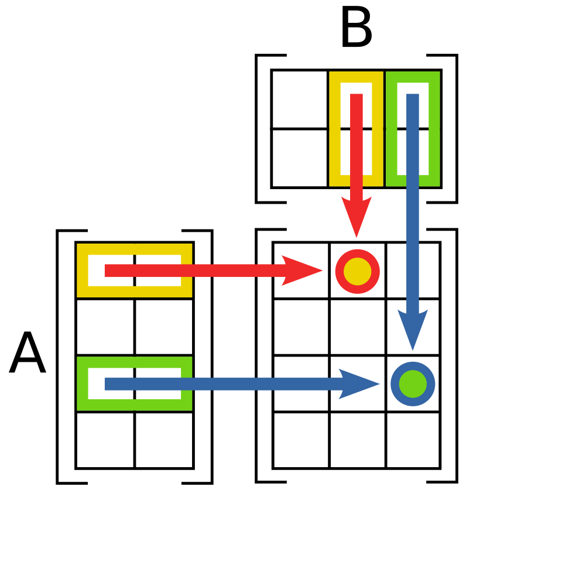
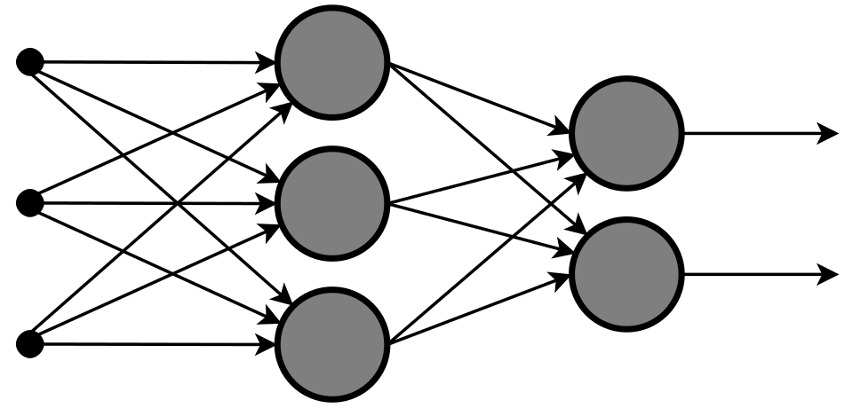

O algoritmo de recomendação
De 2006 a 2016, em ordem e com as pessoas. O episódio anterior fechou com uma regra de três fatores escrita à mão. E se ninguém escrever a regra? Esta foi a primeira máquina que aprendeu e mexeu com todo mundo, e não foi a que conversa. O que ela aprendeu veio do rastro que as pessoas deixaram sem perceber.
Em 2006 a Netflix era DVD pelo correio. Você montava uma fila num site e os discos iam e voltavam; o streaming só começa em 2007. Foi dessa empresa que saiu um concurso público de um milhão de dólares pra quem melhorasse em 10% o acerto da nota.

O método sai de graça

Quem competia como Simon Funk, em terceiro lugar, publicou de graça o método dele no meio de uma disputa por um milhão de dólares. A tabela é de 480 mil pessoas por 17.770 filmes, com uma célula preenchida em cada cem. O modelo nunca vê título nem elenco: só quem votou o quê.
A rede neural entra pela porta dos fundos
São estas duas peças, e só elas, que a Netflix põe pra rodar. Rede neural não nasceu em 2012: já rodava aqui, pequena e sem nome.


Tirar o nome não é anonimizar

Dezesseis dias depois do concurso começar, dois pesquisadores do Texas cruzaram a base com avaliações públicas de outro site. Com oito notas dava pra identificar 99% dos registros. A Netflix não anonimizou: trocou o nome por um número e deixou a impressão digital.
O que ficou na prateleira
É a terceira razão que empurra a recomendação pro resto da rede: prever a nota que você daria deixou de ser o problema, e prever o que você vai assistir virou o problema. E isso qualquer serviço faz sem pedir nada pra você.
O feed para de seguir regra
A partir daí, nem quem construiu o sistema consegue dizer em uma frase por que aquele post apareceu pra você. Não por segredo: porque a resposta são cem mil números.

A bolha de filtro
⚠️ Mas esses estudos são dez anos posteriores ao que este episódio conta, e mediram um sistema que já tinha mudado. Dá pra dizer o que foi decidido; não dá pra dizer qual foi o efeito nas pessoas.
Trocar o que se mede
Nenhuma peça de hardware mudou nesse dia, e nenhum algoritmo novo foi inventado. Mudou o que se mede, e isso mudou o sistema inteiro.
A rede neural assume
O especial é outra coisa: foram os próprios engenheiros publicando, em detalhe, como isso funciona nessa escala. E o trabalho fala o tempo todo em economizar processador comum.

2016
Essa máquina aprendeu a adivinhar o que você quer sem você pedir nada. Ela lê o seu rastro. Mas em nenhum momento você conversa com ela. E se desse pra simplesmente pedir, com as suas palavras?